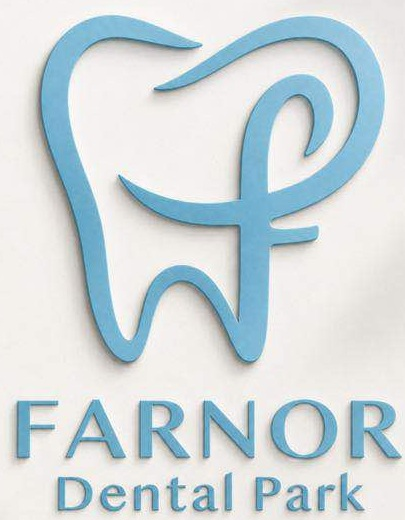

فارنور؛ تجربهای تازه از مراقبت لبخند
در فارنور، درمان با شنیدن نیازهای شما آغاز میشود. خدمات دندانپزشکی در شعبه فعال بنیهاشم تهران، همراه با مشاوره و برنامهریزی متناسب با شرایط هر فرد.

FARNOR · DENTAL PARKخدمات دندانپزشکی فارنور
از زیبایی لبخند تا درمانهای ترمیمی و تخصصی؛ درباره هر خدمت بیشتر بدانید.
ایمپلنت دندان
جایگزینی دندان از دسترفته با بررسی وضعیت استخوان و لثه
مشاهده جزئیات ←بازسازی کامل فک و دهان
برنامهریزی درمانهای چندمرحلهای برای بازسازی عملکرد و لبخند
مشاهده جزئیات ←لمینت سرامیکی
بررسی گزینههای اصلاح رنگ و فرم دندان
مشاهده جزئیات ←کامپوزیت ونیر
اصلاح انتخابی ظاهر دندانها با مواد همرنگ
مشاهده جزئیات ←ارتودنسی
بررسی نامرتبی دندان و مشکلات بایت
مشاهده جزئیات ←پروتز و دندان مصنوعی
راهکارهای ثابت و متحرک برای جایگزینی دندان
مشاهده جزئیات ←عصبکشی و ترمیم
حفظ دندان و بازسازی بافت آسیبدیده
مشاهده جزئیات ←جراحی دندان و لثه
بررسی نیاز به جراحی و مراقبت پس از آن
مشاهده جزئیات ←جرمگیری و بلیچینگ
پاکسازی حرفهای و بررسی روشنسازی دندان
مشاهده جزئیات ←دندانپزشکی کودکان
مراقبت پیشگیرانه و درمان دندان کودکان
مشاهده جزئیات ←درمان روشن، تصمیم آگاهانه
هدف ما این است که پیش از شروع درمان، گزینههای موجود، مراحل احتمالی و پرسشهای مهم برای شما روشن باشد. انتخاب نهایی پس از معاینه و ارزیابی حرفهای انجام میشود.
درباره فارنورسه گام تا شروع مسیر درمان
خدمت موردنظر را بررسی کنید.
فرم آزمایشی را مشاهده کنید؛ اتصال واقعی در دست توسعه است.
طرح درمان واقعی تنها پس از معاینه تنظیم میشود.
شعبه فعال: بنیهاشم تهران
در حال حاضر تنها شعبه فعال فارنور در محدوده میدان بنیهاشم است. اطلاعات دقیق تماس و نشانی پس از تأیید مدیریت درج میشود.
مشاهده اطلاعات شعبه ←فارنور · شرق تهران
محدوده میدان بنیهاشم
شعب دیگر هنوز افتتاح نشدهاند.
برای شروع، با خدمات ما آشنا شوید
فرم مشاوره در این نسخه نمایشی است و اطلاعات واقعی دریافت نمیکند.
مشاهده فرم مشاورهدرمانهای منتخب فارنور
چهار حوزه مهم درمانی و زیبایی را بهتر بشناسید. انتخاب روش درمان تنها پس از معاینه امکانپذیر است.
ایمپلنت دندان
بررسی گزینههای جایگزینی دندان از دسترفته
جزئیات خدمت ←بازسازی کامل دهان
برنامهریزی درمانهای ترکیبی و چندمرحلهای
جزئیات خدمت ←لمینت سرامیکی
بررسی اصلاح فرم و رنگ دندانها
جزئیات خدمت ←کامپوزیت ونیر
آشنایی با روشهای زیبایی و ترمیمی
جزئیات خدمت ←مسیر مراجعه به فارنور
از آشنایی اولیه تا تصمیمگیری درباره درمان، هر مرحله باید شفاف باشد.
آشنایی با خدمات
اطلاعات اولیه درباره روشهای درمان را مطالعه کنید.
هماهنگی مشاوره
پس از فعالسازی سامانه پذیرش، درخواست شما قابل ثبت و پیگیری خواهد بود.
معاینه و طرح درمان
پزشک پس از معاینه، گزینههای مناسب را بررسی میکند.
یک شعبه فعال، یک مسیر روشن
شعبه فعال فارنور در محدوده میدان بنیهاشم تهران قرار دارد. مشخصات دقیق تماس و ساعات فعالیت پس از تأیید مدیریت منتشر میشود.
آشنایی با شعبه ← FARNOR DENTAL PARK
FARNOR DENTAL PARK